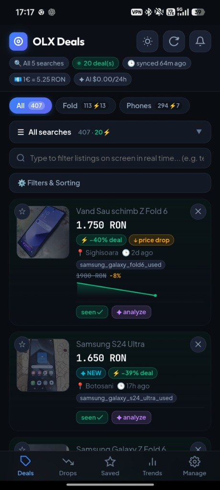
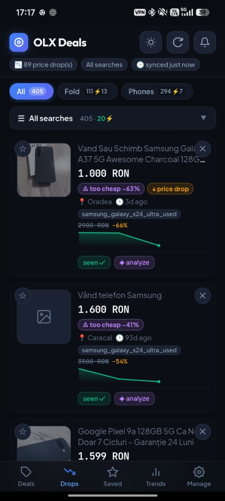
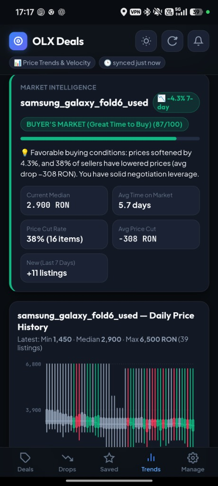
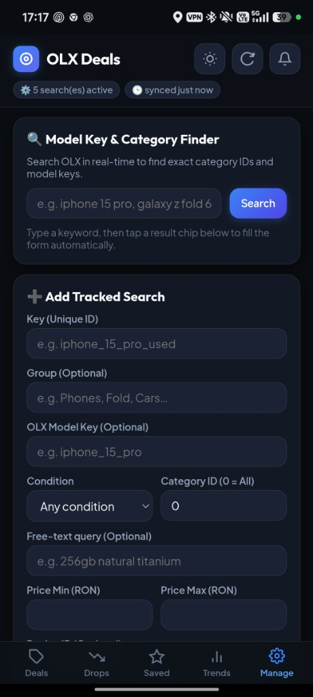
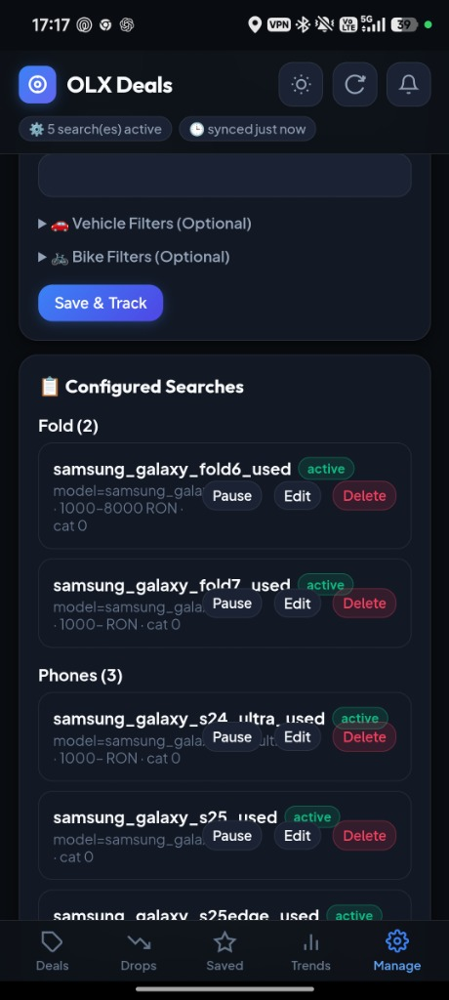

Web Tool / Automation

OLX Deal Finder
About The Project
Track products on OLX.ro and surface genuinely good deals — on a self-hosted, mobile-friendly dashboard you can access directly from your phone.
It periodically pulls listings for configured searches, diffs them against a local SQLite database to detect new listings and price drops, normalizes currencies, and filters out noise and suspicious listings.
Features
- 🔍 Automated Scraper & Diffing: Periodically scans configured searches with polite paginated requests and stores full price history in SQLite.
- 🎯 Deal Scoring & Noise Filtering: Normalizes EUR/RON currencies, filters junk and accessories, and scores listings to highlight exceptional deals.
- ✨ AI Valuation with Gemini Flash: Integrated one-click AI analysis assessing whether a listing is genuine and estimating realistic market value.
- 📲 Dual-Channel Notifications: Real deals reach your phone via Web Push; system failures report silently to a private ntfy channel.
- 📱 Self-Hosted Mobile Dashboard: A clean, zero-dependency PWA dashboard designed for lightning-fast browsing on smartphones.
- 📦 Containerized Quadlet / Podman: Production-grade systemd integration with Quadlet units for hands-off background execution.
Gallery




